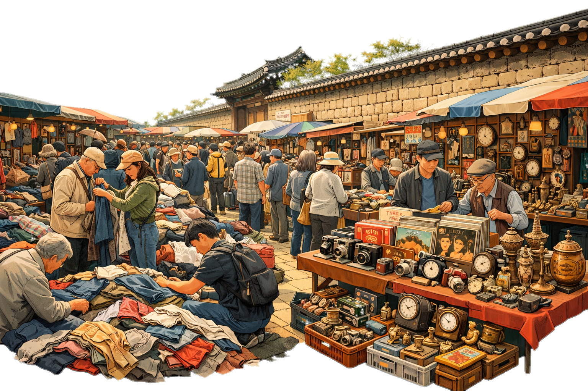
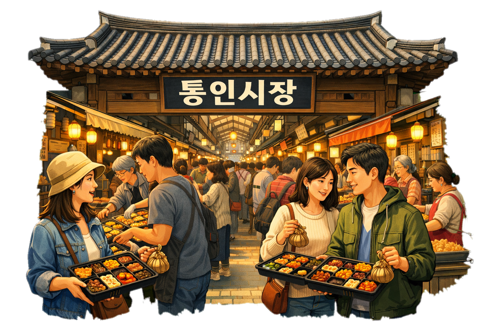

상인 인터뷰
"빈대떡 한 장에 담긴 30년의 세월"
광장시장에서 30년째 맷돌을 돌리고 있는 박순자 할머니. 기름 냄새 가득한 그곳에서 할머니가 지켜온 것은 단순한 음식이 아닌 손님들과의 약속이었습니다.
계속 읽어보기 →수천 개의 점포, 수만 명의 사람들. 그들이 만들어내는 진솔한 삶의 기록
광장시장에서 30년째 맷돌을 돌리고 있는 박순자 할머니. 기름 냄새 가득한 그곳에서 할머니가 지켜온 것은 단순한 음식이 아닌 손님들과의 약속이었습니다.
계속 읽어보기 →
어르신들의 전유물이었던 동묘 벼룩시장이 어떻게 젊은이들의 패션 성지가 되었을까요? 동묘의 좁은 골목에서 발견한 세대 화합의 현장을 기록했습니다.
계속 읽어보기 →
통인시장의 엽전 도시락은 단순한 마케팅이 아닙니다. 잊혀가던 전통 화폐의 가치를 아이들에게 가르치고, 어른들에게는 향수를 불러일으키는 가교 역할을 하고 있습니다.
계속 읽어보기 →모두가 잠든 새벽 2시, 노량진 수산시장은 비로소 깨어납니다. 치열한 경매 소리와 함께 서울의 하루를 준비하는 사람들의 뜨거운 열기를 담아왔습니다.
계속 읽어보기 →